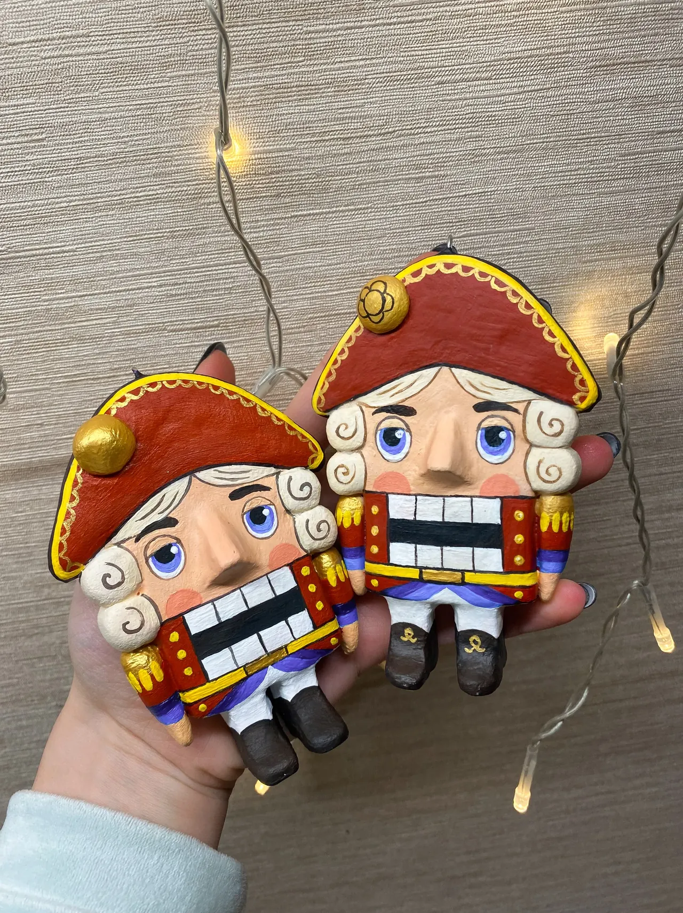
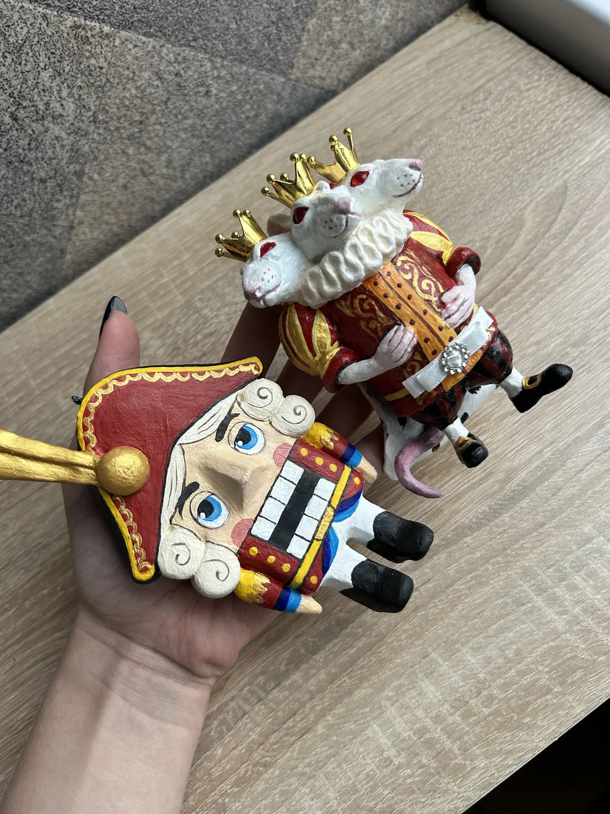

Зимние Легенды
Щелкунчик Эрнст
Житель Рода



Легенда
История Жителя
Эрнст служил при дворе, которого больше нет ни на одной карте. Каждую зиму он выходит на караул у окна и следит, чтобы в доме не погасло чувство праздника.
ХарактерСерьёзный, преданный, слегка старомодный. В глубине души — добрый и очень домашний.
Мир происхожденияЗимние Легенды
СтатусЖитель Рода
Рабочее описание. Номер в Роду, материалы и размеры будут добавлены после уточнения.
Встреча с Хранителем
Заинтересовал Щелкунчик Эрнст?
Уточните, доступен ли этот Житель, или обсудите создание похожей авторской работы.